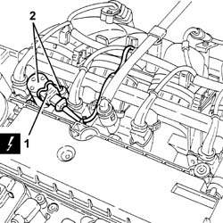

1056B48 timing variator solenoids - r + r
- Path
- Procedures > 10 ENGINE > 1056 PETROL INJECTION SYSTEM > 1056B multi-point injection system (mpi) > 1056B48 timing variator solenoids - r + r
- Kind
- repair procedure (removal / refitting; the operation number is the code)
- Applies to
- engines: 1.6 TS , 1.8 TS; all production periods
- Interactive page
- https://sloeber94.github.io/elrnDB-a156/en/#/3237686
Applies to: engines: 1.6 TS , 1.8 TS; all production periods
 Removing
Removing
 Refitting
RefittingDisconnect the battery negative terminal.
 | Name | Connector |
|---|---|---|
- | Battery |
Applies to: engines: 1.6 TS ; all production periods
Applies to: engines: 1.6 TS , 1.8 TS; all production periods
1. Disconnect the electrical connection from the phase transformer electro-magnet.
| Name | Connector |
|---|---|---|
1 | Timing variator actuator |
2. Undo the bolts and remove the variable valve timing electro-magnet.

Applies to: engines: 1.6 TS , 1.8 TS; all production periods
Refitting
RemovingFit the variable valve timing electromagnet and tighten both retaining bolts.
 | Fastening | Component | Ø | Value (daNm) |
|---|---|---|---|---|
- | Bolt | ADVANCE VARIATOR SOLENOIDS | M7 | 1.4 ± 2.0 |
Connect the electrical connection to the phase transformer electro-magnet.
Applies to: engines: 1.6 TS ; all production periods
Applies to: engines: 1.6 TS , 1.8 TS; all production periods
Connect the battery negative terminal.
Topics linked from this page (3)
- 1016A40 ignition coil cover on cylinder head- r+r
- A1B Battery ( BATTERY NEGATIVE )
- N76 Timing variator actuator